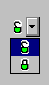

Généralement, un multi-choix se compose de textes. Xwin permet également de définir des multi-choix où les différents choix proposés à l'utilisateur sont des images. Cela permet d'avoir une présentation plus visuelle de la donnée.
Dans ce cas, la variable associée au multi-choix doit obligatoirement être de type numérique.
Ci-dessous, un exemple de multi-choix utilisant des bitmaps.
